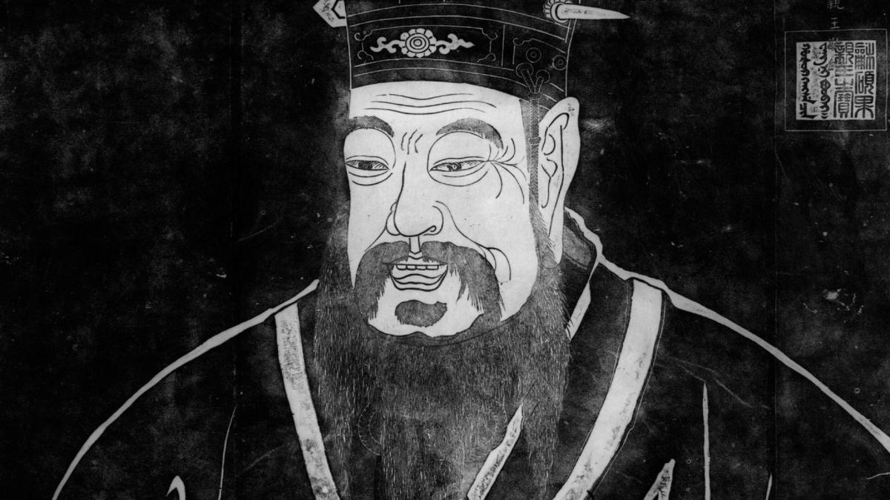

Kongzi (Confucius)
The most influential Chinese philosopher of all time.

A depiction of Kongzi
- Kongzi (Confucius) was a Chinese philosopher who lived during the warring states era. Born around 551 BC in the Chinese state of Lu during a period of political and societal turmoil, Kongzi wanted to create a new set of teachings to cure the ills of the era.
- Read more on Kongzi's thought in an entry in the Stanford Encyclopedia of Philosophy.